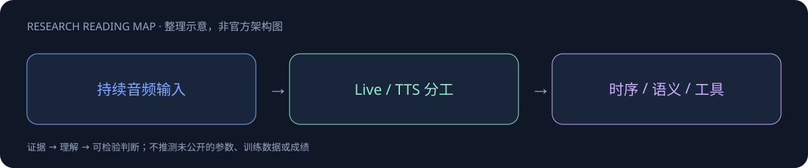

Gemini 3.8 Audio

一页速览
| 维度 | 当前证据 |
|---|---|
| 发布时间 | 2026-09-15 |
| 类型 | 专项支线 / family · Audio / Live |
| 关键事实 1 | Live：128K 输入；64K 输出 |
| 关键事实 2 | TTS：8K 输入；64K 音频输出 |
| 关键事实 3 | 模型卡首次发布9/15；目录更新9/24 |
| 检查日期 | 2026-10-13；官方原始资料在同级src/ |
首次发布与目录更新不是一个日期
模型卡首次published为9月15日；模型目录9月24日的更新不是新模型首发。因此30日表按9月15日记录，不把lastModified当发布日。
模型依赖Gemini3Pro路线，服务分别面向Live与TTS。Live连续交互的输入输出预算、音频合成的预算不一样，不应把它们揉成一个无条件上下文规格。
| 路线 | 上下文规格 |
|---|---|
| Live | 输入128K；输出64K |
| avatar相关输出 | 24K |
| TTS | 输入8K；音频输出64K |
实时交互与离线问答不能同测
Voice Agent需要一边听一边处理打断、轮次结束与工具反馈。离线音频问题分数无法证明会话延迟、对抢话的恢复和工具调用成功率。应分别测声学理解、语言推理、交互时序与任务状态，保留每次语音片段和工具执行的对应关系。
对 Agent Training 的启发
以上是基于已读官方资料的研究判断，不是官方保证，也没有在本机运行模型推理或复现论文成绩。下一步优先补独立验证器、固定任务/版本和完整失败轨迹，避免只保存最好样例。
一手资料与导航
- [S1] Official Model Card
原始下载文件与SHA-256见 抓取记录。报告保留链接，不抓PDF；动态网页响应若只有壳文件，不将其标成完整离线正文。
📊 相关可视化: Gemini 3.8 Audio 中文Poster